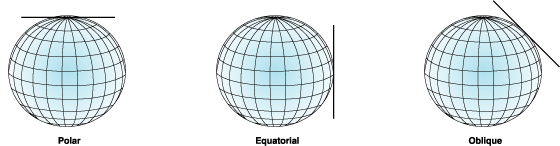
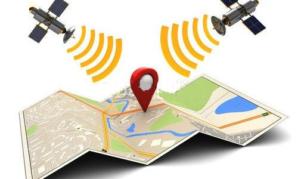

Los datos georreferenciados permiten superponer capas de información y elegir la que necesita el usuario. El software SIG permite combinar información de diferentes sistemas de coordenadas para aportar una ubicación precisa. Esta característica implica que de una misma base de datos georreferenciados se adapta para el uso que necesitan diferentes usuarios mediante la configuración de los datos que debe ofrecer el mapa. La ventaja de las bases de datos SIG consiste en que el software es capaz de integrar la información de diferentes sistemas de coordenadas para aportar fidelidad en las mediciones. Cada usuario puede elegir el tipo de proyección que le convenga a su proyecto, y el SIG gestiona los datos de cada sistema para ofrecer el mapa a medida. La georreferenciación es la técnica de asignación de coordenadas geográficas a un objeto, que se utiliza en los procedimientos de cartografía informatizada y en la elaboración de bases de datos cartográficas digitales. Mediante la georreferenciación, se ubica de forma precisa la posición de un determinado punto en la superficie de la Tierra.
Dado que los mapas son planos, algunas de las proyecciones más sencillas se convierten en formas geométricas que se pueden aplanar sin extender sus superficies. Dichas superficies se denominan superficies desarrollables. Ejemplos comunes son los conos, cilindros y planos. Una proyección cartográfica proyecta de manera sistemática ubicaciones situadas en la superficie de un esferoide sobre posiciones representativas situadas sobre una superficie plana, utilizando para ello algoritmos matemáticos. 
CÓNICAS
Representan zonas de latitud media (entre trópicos y círculos polares).
AZIMUTALES
Solo abarcan un hemisferio. Representan mejor las zonas polares.
CILÍNDRICAS
Los meridianos se deforman en altas latitudes. Suele usarse para las zonas intertropicales entre los 40º N y 40º S. Representa toda la superficie Terrestre, excepto los polos
El Sistema de Posicionamiento Global (GPS) es un sistema de localización, diseñado por el Departamento de Defensa de los Estados Unidos con fines militares para proporcionar estimaciones precisas de posición, velocidad y tiempo, operativo desde 1995 utiliza conjuntamente una red de ordenadores y una constelación de 24 satélites para determinar por triangulación, la altitud, longitud y latitud de cualquier objeto en la superficie terrestre. El sistema GPS tiene por objetivo calcular la posición de un punto cualquiera en un espacio de coordenadas (x, y, z), partiendo del cálculo de las distancias del punto a un mínimo de tres satélites cuya localización es conocida.
created with
Website Builder Software .